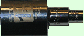
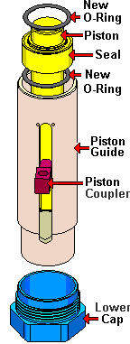
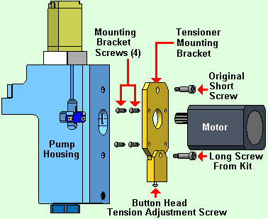

Installing Pump Reliability Components (Sample/Precision/Wash)
This procedure describes how to install sample, precision, and wash pump reliability components.
Optional Materials:
- Torque wrench, 0 to 75 in•lb (0 to 9 N•M), 1/4-in drive
- Socket, 1 - 1/16-in (PN A59751)

This document provides instructions for installing the sample, precision, and wash pump reliability components.
- Piston-seal-guide assembly
- Urethane belt and gray-dot belt flag
Note: The new gray urethane belt must be paired with new gray-dot belt flag.
- Tensioner mounting bracket.
Caution: To avoid contaminating the piston or ceramic seal, use powder-free gloves when handling the piston and ceramic seal. Any gritty material in the piston and ceramic seal will likely affect pump operation
Caution: Discard the o-rings from the old-style pump. The o-rings on the current-style pump are a different durometer than the o-rings on earlier style pumps. The new o-rings are firmer. Do not intermix the o-rings. The current-style pump is identified by a light tan piston guide and two o-rings on either side of the ceramic seal.
| Pump | Number of o-rings to discard |
|---|---|
| Sample Pump | 1 or 2 |
| Precision Pump (Upper and Lower Pump) | 2 |
| Wash Pump | 1 |
For guidelines on determining when to replace parts and which parts to replace, refer to theFluidics: Reliability Component Replacement Guidelines reference topic.


-
For all pumps, replace the belt and belt flag.
-
Remove the motor from the pump (two screws).

-
Remove the motor from the pump (two screws).
-
If the tension mounting bracket WILL be installed, install the bracket.
Note: First, remove the black motor mounting plate from the motor (four screws). Discard the black motor mounting plate.
-
Attach the tensioner mounting bracket to the motor using the four screws from the black motor mount plate.
Note: The tensioner mounting bracket replaces the black motor mounting bracket.

-
Attach the motor assembly (tensioner mounting bracket and motor) to the acrylic housing (two screws). Reuse one short screw in the tensioner mounting bracket top hole. Use the new long screw in the bottom hole.
Note: The long screw for the bottom hole of the tensioner mounting bracket is included with the tensioner mounting bracket kit.

-
Loosen the tension adjustment screw 1 to 2 turns, until the screw head just separates from the surface to allow the tensioner to tension the belt correctly.

-
Attach the tensioner mounting bracket to the motor using the four screws from the black motor mount plate.
-
For all pumps, complete final assembly.
-
Insert the tip of a small straight-slot screwdriver into the gap between the flag and acrylic housing. Install the flag screw, and then tighten the screw to secure the flag to the piston coupler.
Caution: To prevent pump motion or backlash errors, do not rotate the home flag to the side when securing the screw.Caution: Do not get red loctite residue in the piston guide slot. Use canned air to remove any visible residue.

-
Insert the tip of a small straight-slot screwdriver into the gap between the flag and acrylic housing. Install the flag screw, and then tighten the screw to secure the flag to the piston coupler.